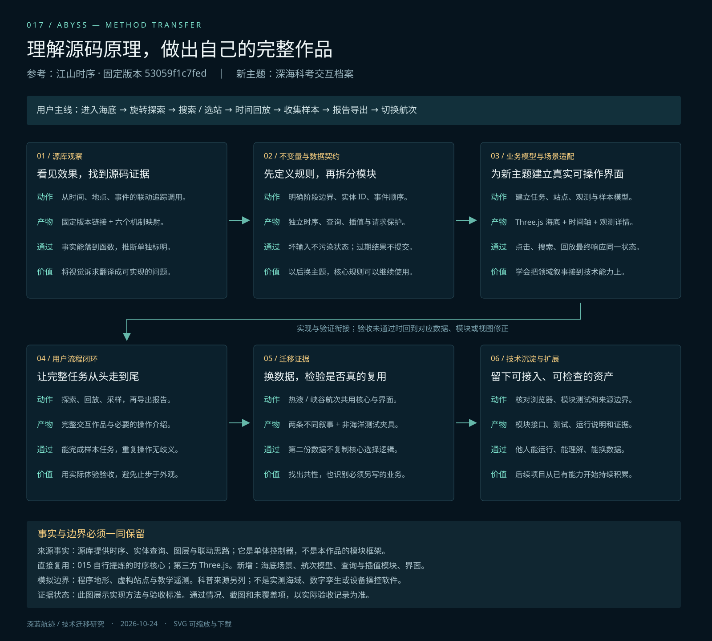

时序状态核心
复用 015 研究中自行提炼的模块。阶段、事件、图层、订阅和 URL 规则无地图或海洋依赖。
temporal-core.mjs ↗017 / FROM PRINCIPLES TO A NEW EXPERIENCE
江山时序用时间、地点和人物组织历史。深蓝航迹把它的工程方法迁移到科考任务：阶段、站点、观测和航迹共同驱动可旋转的三维海底、时间轴与样本记录。
研究结论更新：地图讲故事与动作讲流程是不同的作品类型。深海实践形成通用基础和流程能力，尚不足以证明源库地图叙事已迁移。下一目标为中国铁路网络演进：阅读认识修正与项目规划 ↗，当前尚未实施。
完整研究与探索：打开研究总档案 ↗，集中阅读源库能力与效果、015—017演进、复用边界、规划指令和全部研究资料。本页保留详细工程接入说明。
数据与画面范围：两条航次、站点、数值遥测和样本是虚构教学数据。海底由程序生成，具有真实可交互的三维几何，但不对应实测海域、真实 DEM 或海底数字孪生。科普说明另附 NOAA 与 WHOI 来源；页面不是设备控制软件。
前轮画面对照：重新查看源作者在线作品 ↗的概览、阶段事件与人物路线，学习主场景占比、信息层次和镜头联动；在线版可能较固定源码更新。所研究的源库以 SVG 和浮雕底图呈现地图，不是三维引擎。本作品仍独立绘制 Three.js 海底，没有复用原作地图素材，也不以功能通过宣称艺术质量已对齐。最新截图与四步验收保存在项目 notes/quality-comparison.md；本轮视觉模块与约束 ↓
为什么选深海：用科考航次检验时间、实体、事件与空间路线能否跨主题迁移，同时检验三维遮挡、尺度和机位。前版先证明了模块迁移，现场角色与调查目的交代不足；现在补上母船—脐带—潜器—海床的关系，并用导演模式讲清楚“从哪里出发、看什么、为什么去下一站”。水柱垂直距离是压缩示意，不表示真实深度比例。导演模式的操作与边界 ↓
01 / SOURCE → PRINCIPLE → NEW APPLICATION
| 源库实际机制 | 抽出的通用方法 | 在深蓝航迹中的落点 |
|---|---|---|
| 年份选择历史阶段与快照 | 时间选择阶段，明确区间边界 | 分钟选择任务阶段；选站点、拖时间和播放共同更新任务状态。源码依据 ↗ |
| 选择人物事件会更新地图与卡片 | 操作汇入统一状态入口，视图读取同一结果 | 三维站点、搜索结果、事件列表与时间轴使用同一个状态核心。源码依据 ↗ |
| 经纬度投影、不同图层共用空间 | 业务坐标与绘图分离，各图层各负其责 | 归一化站点坐标同时用于场景、航迹和导航；三维地形、标注、路线与羽流独立呈现。源码依据 ↗ |
| 名称先解析成地点，再查询与定位 | 用稳定 ID 连接搜索与交互，明确未知输入 | 站点名、别名和 ID 经实体索引查询；不会把任意输入猜成某个地点。源码依据 ↗ |
| 加载快照后重新核对当前选择 | 过期异步结果不覆盖最后一次请求 | 快速切换两条航次时，旧请求的成功或失败都不能污染当前任务。源码依据 ↗ |
| URL 描述启动时要打开的人物与地点 | 把可复现选择定义为输入协议 | 可分享航次、时间、事件、四个图层，以及相机位置、观察目标、模式和画面呈现；刷新保持暂停。相机协议是本作品新增的迁移扩展。源码依据 ↗ |
固定研究版本：53059f1c7fed305807b19365857a5f135daf3ac6。源库是较大的单体控制器；下列模块化方案属于我们的提炼，不表示原库已有同名通用框架。源库的地图主体为 SVG；本作品的 Three.js 海底渲染另行实现。
02 / REUSABLE, WITH A CONTRACT
复用 015 研究中自行提炼的模块。阶段、事件、图层、订阅和 URL 规则无地图或海洋依赖。
temporal-core.mjs ↗通过稳定 ID、名称与明确别名查询实体；未知或歧义输入不强行选中目标。查询不触碰界面。
entity-index.mjs ↗按时间在线性关键帧间插值位置和数值通道，超出时间范围时取端点。不绑定 Three.js，也不计算真实路径规划。
track.mjs ↗只有最后发起的任务可以提交结果。旧请求完成或报错时，不改写当前画面；销毁后停止提交。这不等于取消网络请求。
latest-task.mjs ↗校验、编码与恢复位置、观察目标和模式；带版本标识，坐标量化至 0.1，并可按容差比较状态。没有 DOM、Three.js 或海洋依赖。
camera-state.mjs ↗按镜头秒数管理播放、暂停、选章、进度与完成状态；没有 DOM、Three.js 或海洋依赖。相机、字幕、URL 与记录交给适配层。
director-core.mjs ↗管理近、远站位的采样记录、同类配对门槛与会话重置。冻结快照，没有 DOM、Three.js 或个人存储依赖；配对成功不等于证明科学结论。
learning-core.mjs ↗四轴输入驱动独立位姿，处理加减速、边界和高度场离底约束。没有 DOM、Three.js、计时器或存储依赖；这是本工程新增的方法沉淀，源库没有驾驶功能。
pilot-core.mjs ↗把精确文本引用和可选时间锚点编译为提示计划，按媒体秒数无状态查询。保留任意领域的有限元数据，没有播放器、渲染或主题依赖；包含非海洋测试。
narration-cues.mjs ↗import {createExplorer} from './core/temporal-core.mjs';
import {createEntityIndex} from './core/entity-index.mjs';
import {interpolateTrack} from './core/track.mjs';
const explorer = createExplorer(dataset);
const index = createEntityIndex(dataset.entities);
const stop = explorer.subscribe(view => {
const telemetry = interpolateTrack(dataset.frames, view.state.time);
render(view, telemetry); // 你的网页、二维图或三维场景适配器
});
const station = index.resolve('站点别名');
// 实体可有多个事件；由业务决定本次应选择哪个事件。
const event = dataset.events.find(e => e.entityId === station?.id);
if (event) explorer.dispatch({type:'SELECT_EVENT', id:event.id});
// 离开当前任务时：stop(); explorer.destroy();时间核心使用连续的左闭右开阶段，最后终点为 max + 1；本作品采用分钟刻度，支持小数分钟的连续回放。实体和事件有稳定 ID，事件按时间排序；route 与 labels 为预设图层。轨迹是关键帧线性插值，不包含流体动力学或路径规划。采样资格、科考叙事与三维材质属于业务层。完整核心接入指南 ↗
URL 中的 cam 保存位置、观察目标与模式，坐标精度为场景单位的 0.1；look 保存“地形测绘／潜器观察”。通用协议允许距离 10–2500，海底适配器另限制为 48–1040，并保护俯角、目标范围和地形视线。安全位姿可恢复；旧贴地或山后镜头会调整并提示，不能保证逐坐标复现不安全视角。四个图层均可恢复：route / labels 由时序核心保存，terrain / plumes 由业务层的 fx 参数保存。自动播放不随刷新恢复，个人采样记录只存本浏览器；换主题须重新适配坐标、镜头运动和安全条件。
把左目录收进抽屉，以沉浸模式隐藏右侧记录，让三维场景获得更大空间；场内叙事、前后事件按钮和小航线图保留任务上下文。无深链接参数进入作品，或在普通探索中切换航次时，先停在本航次水面母船的导演开场，点击继续才播放；驾驶中切换航次则保持手动模式和视角类型。明确的 time、event、cam、film 或 pilot/pose 分享参数继续按链接恢复，站点导览仍从起点开始。选事件、剖面与前后事件统一镜头动作，俯视保留全局；其他模式开始播放时默认跟随潜器。
通用核心现为九个，导演时钟管理影片秒数，学习核心管理临时采样会话，驾驶核心管理独立位姿和高度场约束，语句提示核心按媒体时间查询当前提示；hydrothermal-plume.mjs管理喷流粒子的出现、扩散和消退；benthic-life.mjs按 random、count 与 groundHeight 创建管虫或海绵群落，由实体 appearance 选择 tube-worms／sponges 外观。这两个模块依赖 Three.js，属于可组合的主题视觉适配器，不是流体／生态仿真，也不能只换任意 JSON 就生成新主题作品。镜头约束、地形材质和主体构图需一起验收。热液场的低脊与裂隙、峡谷场的高谷壁与弯曲深槽采用不同程序三维几何，驾驶碰撞也读取对应高度场。
导演模式各十一章，共二十二段通俗旁白，开场后先认识设备。热液片先说明我们跟随 ROV 调查什么，再解释海水沿裂隙受热与水岩反应、热液上升、遇冷产生矿物颗粒和烟囱；随后讲化学能如何经微生物支持部分管虫，最后近／远各采一瓶水、对照、整理和返航。峡谷片同样从目标出发，解释栖地、珊瑚和海绵，再比较两站水样。旁白由 MiniMax speech-2.8-hd、male-qn-qingse 音色生成；接口见MiniMax 官方同步语音合成文档 ↗。
十一章导航说明当前任务，环境水深剖面区分水面、下潜和海底；水柱纵向距离是压缩示意。概念词典可随时查阅，三维原理按语音进度自动分步，也可点步骤暂停细看后恢复自动。两站均为水样，放映会演示关盖，也可暂停后亲自操作；完成瓶盖关闭后才出现临时样本卡；两份同类样本齐全才解锁对照，化学成分仍待分析。结尾按“已知原理 / 本轮记录 / 待分析”整理，临时记录不自动进入个人报告，重播会清空。演示记录不进入个人航次报告。
director-ui.js连接通用时钟和浏览器控件，narration-player.mjs适配实际音频；learning-ui.js连接学习会话、步骤与交互，learning-content.mjs保存词典与主题内容，learning-world.mjs生成解释性三维原理。它们不计算真实化学反应或生态过程。shot-camera.mjs仍按本场景尺度规划机位，expedition-context.mjs生成母船、水柱和设备；脚本在director-shots.mjs。
语音开启时按实际音频位置推进镜头，缓冲时等待；暂停、拖动、选章和倍速与音轨同步，可关闭语音、重试、换景别、收起解说或“在此自由探索”。每镜时长为 max(原分镜时长, ceil((音轨秒数+1)×10)÷10)，当前热液 311.2 秒（5:11.2）、峡谷 298.5 秒（4:58.5），影片秒数独立于航次分钟。film=shotId 只保存章节并暂停打开，不保存片内秒数、自由 cam 或临时景别。context=0/1 保存普通探索的语义标注；导演期间启用所需场景图层，退出恢复原勾选。
生成工具从项目之外的绝对 --env-file 路径读取私有配置，网页只加载 MP3 和公共清单，不暴露密钥，也不在播放时请求 MiniMax。二十二段真实 MP3 已完成解码与文本匹配，新增两段设备配音，其余二十段复用校验缓存；新增设备、独立演示与完整音画的浏览器覆盖以项目 notes/verification-equipment.md 为准，二十章学习版记录保留在 notes/verification-learning.md。旧版通过记录与纯模块检查不能代替本轮实际操作验收；未提供视频导出。
人留在母船，ROV 不载人。新增设备章把工作拆为八组：灯光与相机看清现场，声呐与传感器提供目标、距离和环境线索，推进器移动与悬停，固体浮力材料与耐压舱承托并保护设备，脐带缆送电传令回图，机械臂接触操作，小型采水瓶封存水样，船上控制台、绞车和吊架完成指挥与布放回收。“设备清单”页签可逐项查职责与画面位置。
科考现场与教学放大镜头共同使用rov-system.mjs的 createRovSystem()，共享潜器几何、部件分组、语义锚点、高亮、剖视及确定性动作；createRovControlStation() 另提供放大的船端教学工作台，普通母船仍用既有模型。learning-world.mjs再叠加声呐波纹、双向通信和工作线索。选中一步后点“运行设备 4秒”可独立查看动作，影片与语音保持暂停，场景 setEquipmentDemoTime(seconds|null) 只推进独立设备动作，不写个人记录。新主题可复用工厂接口与演示调度，具体设备结构、尺度和职责仍需适配。
随身小瓶架在潜器上；后面的 A／B 大采水架是本演示预先布放的海床装置，机械臂不托举它。声波、通信粒子、放大比例与读数均为解释性示意，不能当作真实声学、导航或化验结果。最新实际验收见项目 notes/verification-equipment.md；当前文档不把音频校验扩称为新增浏览器流程已通过。
| 证据 | 如何检查 | 证明到哪里 |
|---|---|---|
| 两条航次共用代码 | 切换“热液之境”和“峡谷回声”；热液数据 / 峡谷数据 | 同一 UI、核心和场景适配器读取两份任务数据。场景按 terrain 类型选用已有地形与物体生成规则；新领域仍需相应适配。 |
| 另一个领域的测试夹具 | node projects/017-abyss-expedition/src/check-core.mjs | 时序、查询、插值与异步规则对非海洋夹具也成立；不表示三维海底场景已经适配所有业务。 |
| 相机状态往返与拒绝非法输入 | node projects/017-abyss-expedition/src/check-camera-state.mjs | 验证量化、三个模式、数值与距离边界、不可变输入和容差比较；浏览器镜头是否正确恢复另做实际操作验收。 |
| 驾驶与两类地形 | node projects/017-abyss-expedition/src/check-pilot.mjsnode projects/017-abyss-expedition/src/check-terrain.mjs | 分别检查独立运动约束与实际地形高度场；不替代浏览器驾驶、触摸、镜头和分享恢复验收。 |
| 语句提示与本地估时 | node projects/017-abyss-expedition/src/check-narration-cues.mjsnode projects/017-abyss-expedition/src/build-environment-cue-timing.mjs --dry-run | 检查精确引用、冻结计划、时间查询与非海洋夹具；本地停顿分析不联网、不改音轨，不代替浏览器与几何验收。 |
| 模块边界明确 | 单独阅读 core 的九个模块文件；没有 DOM、WebGL 或上游控制器依赖 | 可把时序、查询、插值、异步保护、相机状态、导演时钟、临时学习会话、驾驶与语句提示带到巡检、课程或项目回放；保留各自输入契约。 |
FREE PILOTING / OWN YOUR ROUTE
点击自由驾驶，或在导演中接管潜器。进入后暂停航次时钟与音频，隐藏原航次遥测；驾驶台只显示模型位置、离底高度、航速和最近站。查看附近站点仅打开介绍，不移动潜器或写入个人报告；驾驶中切换航次保留手动模式与视角类型，结束后恢复航次观察流程，不自动播放。
| 控制 | 动作 |
|---|---|
| W/S · A/D | 前后移动 · 左右转向 |
| Q/E · R/F | 左右横移 · 上升下潜 |
| 空格 | 按住急停；屏幕八个方向按钮也可长按操纵 |
| 1 / 2 / 3 | 跟随潜器 / 前向视角 / 独立镜头 |
跟随视角可拖动绕潜器看，独立镜头可旋转、平移和缩放，驾驶键仍控制潜器。菜单、弹窗、失焦或页面隐藏会停止操纵。横向 ±580 模型单位的边界为整机半径预留空间，并有海床、固体道具与顶部高度保护；这是教学驾驶，没有真实水动力或任意物体编辑。
pilot=chase|cockpit|orbit 保存视角，pose=v1:x,y,z,heading 保存潜器位姿；非前向镜头可另存 cam。恢复时为零输入、零速度，不自动移动。pilot-ui.js负责输入、仪表和停止边界，pilot-core.mjs负责纯运动与约束，场景负责模型、相机和相同的 heightAt 高度函数；带 startPose 的接入示例见核心指南 ↗。
驾驶核心通过 terrainEnvelope、isPoseBlocked 和 bodyRadius 接收整机净空、固体相交与边界半径。collision-world.mjs查询保守的整机定向包围盒（OBB）与同源地形、固体的关系；collision-assets.mjs保存含机械臂和小幅横滚的潜器包络，并逐 mesh、逐 InstancedMesh 实例提取世界轴对齐包围盒（AABB）。平移、升降和转向途中都检查，转角被挡仍允许合法移开；恢复旧位置时先尝试附近推离或安全回退。
这两项是几何适配资产，不增加九个纯核心的数量；换模型和地形须重新标定尺寸、格点与固体。包围盒可能保守封住复杂模型空隙，不是精确网格刚体碰撞。检查命令为 src/check-pilot.mjs、src/check-collision-world.mjs、src/check-collision-assets.mjs；核心与几何检查不等于浏览器驾驶或全片重放已经通过。
独立驾驶是本工程新增沉淀，源库仍只作为时序与空间联动方法参考。当前导演保留十一章／二十二段 MiniMax 音轨；新驾驶与两种地形的实际覆盖见项目 notes/verification-piloting.md，设备、学习和配音记录保留各自历史范围。未将视口检查称为实物手机测试，也不据此宣称全片已经重放通过。
03 / THE COMPLETE TRANSFER PATH
图保留早期方法迁移路线；新增驾驶与语句提示以本页九模块清单为准。实现阶段与验收证据分开记录，不能由模块通过推断完整画面已经验收。

04 / VERIFY A COMPLETE JOURNEY
默认入口先暂停在导演开场，点击继续听讲解；也可接管自由驾驶，驾驶中换航次仍保留手动模式。导演学习包含设备八组职责、独立四秒演示、原理分步、同类 A／B 采水、临时记录与三栏整理；设备版实际覆盖以 notes/verification-equipment.md 为准，旧二十章学习验收保留原范围。“开始站点导览”从航次起点按用户点击逐站推进；选站时暂停回放、跳到该站首个事件并自动靠近。每站的“观察对象、记录方式、对比线索”来自独立教学资料文件，不由运行时 AI 生成。逐站导览与时间轴连续回放是两种不同操作。
前轮已实测：作者在线概览、阶段与人物路线对照；新版八站导览、事件／剖面／前后事件同步、极端旋转约束和旧贴地镜头的安全恢复；两航次、管虫、海绵及窄屏无页面水平溢出，检查时无 warn/error。1280px 窗口的画布约 980px，970px 窗口约 700px。该轮截图及四步结果见项目 notes/quality-comparison.md；不宣称艺术质量已经对齐源作。
前轮导览、样本比较、真实 JSON 导出和镜头／图层恢复记录保存在 notes/verification-polish.md；首版流程保存在 notes/verification.md。各轮覆盖范围分别保留，旧测试不冒充本轮新验证。窄屏为 CSS 视口检查，不等于物理手机测试；未测试的硬件与异常路径不列为通过。
05 / SCIENCE, SEPARATED FROM SIMULATION
热液与冷海水混合时，矿物沉淀可形成烟囱。作品中的羽流和烟囱是程序视觉表达，未模拟实际化学反应。
微生物可利用化学反应释放的能量制造有机物，为热液环境中的部分食物网提供基础。
冷水珊瑚可生活在深、冷、暗的水域，通过捕食水流中的颗粒获得食物，并为其他生物提供栖息空间。
ROV 通过缆线与水面船只连接，配备相机、灯光及传感器，部分带有取样机械臂。本作品回放的是教学航迹。
海底包含洋中脊、峡谷与大陆坡等结构。作品只借其形态组织空间，地形坐标不对应任何实际海域。
资料核对日期：2026-10-24。深度、温度、溶氧与备用电量均为教学数值；温度表示模拟潜航器周围的海水，不表示热液喷口流体温度。采样操作是交互任务，不构成真实海洋采样规程。没有使用机构影像，也不暗示 NOAA 或 WHOI 对作品背书。
结构化来源索引 ↗ · Three.js MIT 许可 ↗ · 方法参考：江山时序固定版本 ↗
06 / EXPLAIN THE ENVIRONMENT WHILE EXPLORING
环境导览与导演影片分开：驾驶时点“听环境总览”，可连续听完六段，或展开选择主题、查看完整解说与资料。旁白与切段不自动接管主镜头、不选站、不推进航次时刻。峡谷片说明深海条件、岩壁、泥沙、水流、海洋雪与栖息环境；热液片说明岩脊、冷热水、裂隙循环、矿物黑烟、微生物供食和调查方法。
12段 MiniMax 环境音轨共378.432秒，与原22段导演音轨独立。主题文本、观察点与NOAA／WHOI资料保存内容；environment-guide.js复用导演时钟、语音播放器和缓存，并把主动对准／恢复镜头请求交给场景；位置说明辅助函数按教学地形粗区域和离底关系提示位置，不把最近站当成已经到达。换主题时重写内容、区域规则与观察点，保留播放和输入边界。
55个递进提示按真实相机投影与 viewOffset 选目标，并扣除导览卡片、驾驶台等UI占用。岩壁使用真实地形交点、贴合法向的金圈与局部面高亮；水流在可见水体中显示短流线和箭头，海洋雪以缓慢下沉的颗粒说明方向。暂停冻结动画时间相位，拖动语音进度回算当前提示；流速、方向和颗粒均为教学示意。
珊瑚、海绵、管虫和采样设备保留原站位与原位标记。对象远处或被挡时，独立三维观察窗复制同站原有几何，展示分枝、杯状开口、硬管或瓶盖，并标出站点和距离；原实体、主镜头和潜器保持原位。它让用户看见当前讲到的对象，同时保留主画面的空间关系与自由操控。
“画面提示”可单独关闭，语音继续。点击本段提示按钮只定位语音时刻并暂停；“看清当前对象”由用户主动请求场景对准，随后可“回到我的镜头”。驾驶输入会回到原镜头，手动拖动则转为独立观察。导览不自动驾驶，也不写个人报告。
narration-cues.mjs仍是第九个纯核心；语句目标和本地估时保存内容，environment-cues.mjs与cue-labels.mjs负责主题高亮和指示。computeCueLayout输出避开UI的可用区域，cue-lens.mjs创建共享场景几何的观察窗；场景的 getEnvironmentCueStatus() 汇总目标可见性、对准与观察窗状态。这些均为可复用渲染适配器，不增加九个纯核心的计数，换主题仍须提供实体、地形和相机安全规则。
布局与观察窗检查命令为 src/check-cue-layout.mjs、src/check-cue-lens.mjs。当前页面覆盖以项目 notes/verification-visible-cues.md 为准；此前 notes/verification-environment-cues.md 与环境导览记录保留原范围。模块检查不等于所有浏览器流程或完整影片已通过。
原音轨没有改动。离线分析将122处实测停顿与标点启发式匹配，锚点之间按文字和标点权重插值；这是停顿辅助估时，不是逐词强制对齐，也没有逐词时刻误差保证。语音由用户点击开始；关闭页面、切换航次或进入导演时停止。上述三维能力由本工程新增，未从源库直接复用。